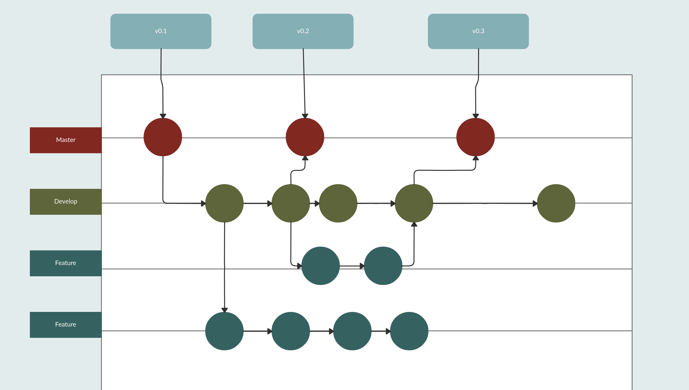
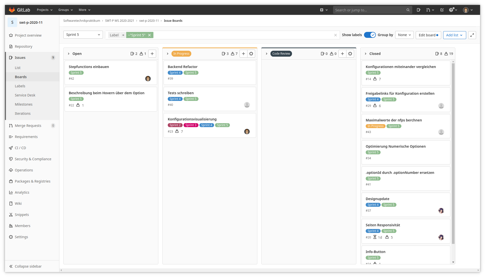

Technologien
Backend
- Java mit Spring Boot
- Hibernate
- PostgreSQL Datenbank
CI/CD
image: maven:3.6.3-openjdk-11-slim
stages:
- test
- deploy
before_script:
test:
stage: test
script:
- echo "All tests successfull"
production:
stage: deploy
script:
- rm -rf requirements_engineering protokolle feature_model greenc/Dockerfile .gitlab-ci.yml
- mv greenc/* .
- rm -rf greenc
- apt-get update -qy
- apt-get install -y ruby-dev git
- gem install dpl
- git add .
- git commit -m "Deploy just the good stuff"
- dpl --provider=heroku --app=$HEROKU_APP_PRODUCTION --api-key=$HEROKU_API_KEY
only:
- master
Arbeitsweise
Gitlab
- develop und master Branch -> Gitflow

- Pro Issue ein Branch
- Issue fertig -> Branch in develop gemerged
- Release -> develop in master gemerged
- Issue aus Userstories
- Issue per Label zu Sprint zuweisen
- Übersicht von aktuellem Sprint in Kanbanboard

Arbeitsweise
Mobprogramming?
Jaein
Erfahrungen:
- 2 Mobs zu Anfang
- Übergang zu Einzelarbeit, wegen Ineffizienz (siehe Lessons Learned)
- Teilweise wieder Pairprogramming oder arbeiten in der kompletten Gruppe
Arbeitsweise
SCRUM?
50/50
Erfahrungen:
- Versuch regelmäßige Standupmeetings abzuhalten
- Gruppenmitglieder haben zu unterschiedliche Zeitplanung -> Studenten,
deshalb waren Standupmeetings häufig überflüßig, da nichts passiert ist
Arbeitsweise
SCRUM?
- Horizontale Teamorganisation -> Rollen waren kaum ausschlaggebend
- Arbeitsweise trotzdem mit Sprints und Retrospektiven am Sprintende
- Teilweise viel zu viele Aufgaben pro Sprint zugewiesen
Lessons Learned
- Git(Lab) ist sehr hilfreich zur Softwareentwicklungsorganisation
- Softwareentwicklung und Uni-Alltag nicht einfach kombinierbar
- Zeitplanung bei unterschiedlicher Alltagsgestaltung schwer
- Mobprogramming war schwer umsetzbar
- Unregelmäßigkeit -> wenig Koordination
Lessons Learned
- zeitnahe Dokumentation und Tests sind wichtig
- Beim prototypen trotzdem nicht unsauber arbeiten
- Termine trotzdem, auch wenn einzelne Personen nicht können
-
#1 = gute Codequalität
- Konkretere Rollenaufteilung muss nicht nur ein Nachteil sein - besonders für Unerfahrene ist es besser nur eine Sache und diese gut zu machen